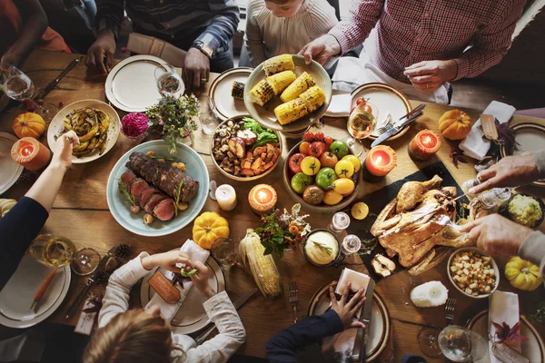

Durrell's Favorite Foods

Food Galore!!
*-Here's a List of Some of My Favorite Foods in the Area-*
Check out some of Boston's hottest black and brown owned businesses in Boston!!
Nubian Markets
I recommend their fresh produce (Mangoes), and their Jerk Salmon meals
The Real Deal Pizza
I recommend the Chicken Ranch Pizza
Shaebutter Smoothies
I recommend the Immune Booster, Mango Madness or The 617
Crumbl Cookies
I recommend Mom's Recipe or the Strawberry Shortcake
Grace by Nia
I recommend the Cajun Red Snapper, and Sweet Heat Chicken Wings
Cheesecake Factory
I recommend the Ultimate Red Velvet Cake Cheesecake